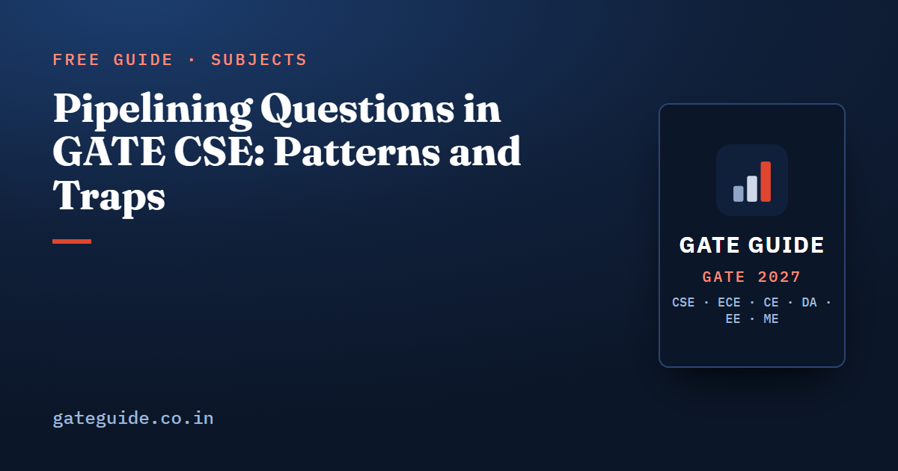

Pipelining Questions in GATE CSE: Patterns and Traps

Pipelining questions in GATE CSE come in two families: performance arithmetic, where you turn stage delays into a cycle time and then into a total time or a speedup, and cycle counting, where you trace an instruction sequence through a timing diagram and add stalls. Both are mechanical once the conventions are fixed. This guide works each family with a short example, and spends time on the split-stage trap, which produces a wrong answer that looks right.
In this guide
Key takeaways
- . Everything else follows from that one number.
- Time for instructions in a -stage pipeline . Add, do not multiply.
- Splitting the slowest stage helps only until the next-slowest stage becomes the bottleneck.
- Forwarding removes arithmetic-to-arithmetic stalls but leaves one stall on a load-use pair.
- Whether the register file is split-phase changes stall counts by a cycle, so read that assumption before counting.
Where pipelining sits in the paper
The GATE 2027 CS syllabus names the topic directly: "Instruction pipelining, pipeline hazards". That wording is unchanged in substance from 2026, even though the rest of the Computer Organization section was reworded; the changes are covered in the guide to the 2027 COA syllabus changes.
Third-party analyst compilations put COA at 3 to 12 marks per paper from 2009 to 2026, typically 8 to 11 marks. These numbers are unofficial and analysts differ by two to three marks. Within that budget, pipelining and the memory hierarchy are the two pillars, and the book's analysis estimates that they have supplied roughly 60 to 70 per cent of COA marks since 2014.
| Pipeline question family | Years placed in the reconstruction | Usual format |
|---|---|---|
| Cycle time, time for instructions, speedup | 2004, 2011, 2013, 2014, 2016, 2017, 2026 (approx.) | NAT, 1–2 marks |
| Cycle count with hazards and forwarding | 2005, 2008, 2010, 2015, 2021, 2022–2025 (approx.) | NAT, 2 marks |
| Speedup with stalls or a branch predictor | 2014, 2015, 2020, 2021 | NAT, 2 marks |
| Control hazards, delay slots, branch penalty | 2006, 2008, 2013, 2021 | MCQ or NAT, 2 marks |
| Non-uniform stage occupancy tables | 2009, 2018 | NAT, 2 marks |
These year attributions are an analyst reconstruction from previous-year repositories and are approximate. For the whole subject in one place, read the COA important topics guide.
The cycle-time template
A four-stage pipeline has stage delays 8, 6, 12 and 10 ns, with a 1 ns pipeline register between stages.
The speedup is below the ideal limit of 4. Note that the non-pipelined time carries no latch delays.
Three details decide the answer. The latch delay is added to the maximum stage only, not to every stage. The count is , not . And the non-pipelined reference is the sum of the stage delays, with latches excluded unless the question says otherwise.
The split-stage trap
Setters like to ask what happens when the slowest stage is split into two equal halves. The tempting answer is that the throughput doubles. It does not.
Split the 12 ns stage into two 6 ns stages. The pipeline now has five stages with delays 8, 6, 6, 6 and 10 ns. The slowest stage is now the 10 ns one, so the period becomes ns, not ns.
The general rule: splitting or merging stages changes the period only to the extent that the bottleneck moves. Always recompute the maximum across the new stage list before doing anything else.
Data hazards, forwarding and stall counting
The second family gives a short instruction sequence and asks for total cycles. Fix the conventions first, then draw the diagram.
In a standard five-stage pipeline with IF, ID, EX, MEM and WB:
| Situation | Stalls with full forwarding | Stalls without forwarding, split-phase register file |
|---|---|---|
| Producer and consumer adjacent, arithmetic result | 0 | 2 |
| One instruction apart | 0 | 1 |
| Two instructions apart | 0 | 0 |
| Load followed immediately by a use | 1 | 2 |
A short example. Five instructions, full forwarding, exactly one load-use pair among them. The hazard-free time is cycles, and the single load-use stall adds one, so the answer is 10 cycles.
When the execute stage takes several cycles, as with a multiply or divide, the dependent instruction waits until the producer's multi-cycle stage ends, and forwarding starts from there. That is the same idea with a longer wait, and it is the shape placed in 2008, 2010, 2015 and 2021 in the reconstruction. A related shape gives a per-class table of cycles spent in one stage and asks for the total over a hundred instructions; there the extra cycles simply add up.
Control hazards and CPI with stalls
Control-hazard questions are usually expressed as a CPI computation. If a branch is resolved at the end of stage and fetching stops until then, each taken branch costs cycles.
Example: branches are resolved at the end of stage 3, so the penalty is 2 cycles. Twenty per cent of instructions are branches and 60 per cent of those are taken, with predict-not-taken.
Now add a predictor that is 90 per cent accurate on all branches. Only mispredictions cost the penalty:
The speedup is measured at the same clock. The general form is
That single expression covers the two-processor comparison questions as well.
The traps that cost marks
- , not . The most expensive arithmetic slip in the topic.
- Latch delay once. Add it to the maximum stage, not to each stage, and leave it out of the non-pipelined reference.
- Splitting a stage. Recompute the maximum; the gain stops at the next-slowest stage.
- Split-phase register file. Writing in the first half of a cycle and reading in the second half removes one stall. Pre-2021 questions assume it; recent questions state it.
- Forwarding does not fix everything. A load-use pair still costs one stall, so the statement that bypassing removes all read-after-write hazards is false.
- Delay slots always execute. The instruction in a delay slot runs whether or not the branch is taken.
- Prediction only helps when correct. A predictor of accuracy leaves a penalty on the remaining fraction .
- Clock units. Convert GHz to ns before mixing frequencies with stage delays.
- Cycles in a stage versus stage delay. Questions mix the two deliberately; one is a count, the other a time.
The cross-subject version of this list is in common mistakes that cost marks in GATE CSE, and the formulas are collected in the GATE CSE formula sheet.
How to practise pipelining
Work the performance template in both directions: delays to time, and a target time back to a required stage delay or frequency. Then take one six-instruction sequence and count its cycles four times, once with full forwarding, once without, once with a split-phase register file and once without, so the effect of each convention is something you have measured rather than memorised.
Finish with one CPI expression per paper you practise, written out as 1 plus each stall term, because that single line converts almost every branch, memory and two-processor comparison question into arithmetic. The COA chapter of the GATE CSE 2027 book sets out these patterns with worked solutions and states every convention inside the question, which is the habit that keeps a difficult timing item from becoming a guess.
Frequently asked questions
How do you calculate the time taken by a k-stage pipeline?
The clock period is the slowest stage delay plus the latch or register delay. For instructions on a -stage pipeline the time is . The common error is multiplying stages by instructions instead of adding them, which overstates the time badly for large .
What is the maximum speedup of a k-stage pipeline?
The limit is k, the number of stages, reached only when there are no hazards, stage delays are equal and latch delay is zero. In practice the speedup is lower because the period is set by the slowest stage plus latch overhead, and because stalls from data and control hazards add cycles.
Does splitting the slowest pipeline stage double the throughput?
No. Splitting the slowest stage only lowers the clock period until the next-slowest stage becomes the limit. If a four-stage pipeline has stages of 8, 6, 12 and 10 nanoseconds, splitting the 12 into two 6s leaves a 10 nanosecond stage, so the period falls from 13 to 11 with a one nanosecond latch.
What is a load-use hazard and can forwarding remove it?
A load-use hazard occurs when an instruction needs a value that the immediately preceding load fetches from memory. Forwarding cannot remove it entirely because the data is available only after the memory stage, so one stall remains in a standard five-stage pipeline. Forwarding does remove the ordinary arithmetic-to-arithmetic dependency stalls.
Are pipelining questions asked every year in GATE CSE?
Pipeline cycle counting and performance arithmetic appear in most papers in the reconstruction used here, with cycle counting placed in 2005, 2008, 2010, 2015 and 2021 and performance arithmetic in 2004, 2011, 2013, 2014, 2016 and 2017. Analysts also report pipeline items in 2026. No topic is guaranteed for a given year.
Sources
- GATE 2027 official website (IIT Madras)
- GATE 2027 CS syllabus (official PDF)
- GATE 2027 question paper pattern (official)
- GeeksforGeeks subject-wise weightage for GATE CS
- GATE Overflow previous year questions
Dates, fees and the syllabus are set by the GATE 2027 organising institute and can change. Always confirm at gate2027.iitm.ac.in.